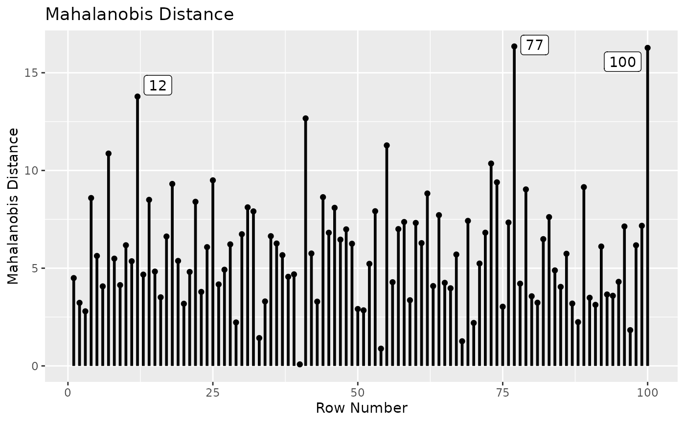
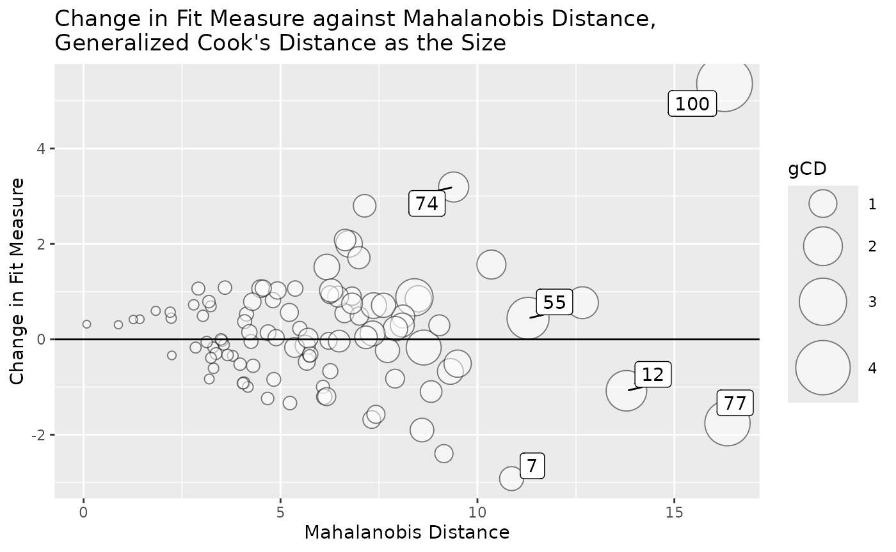
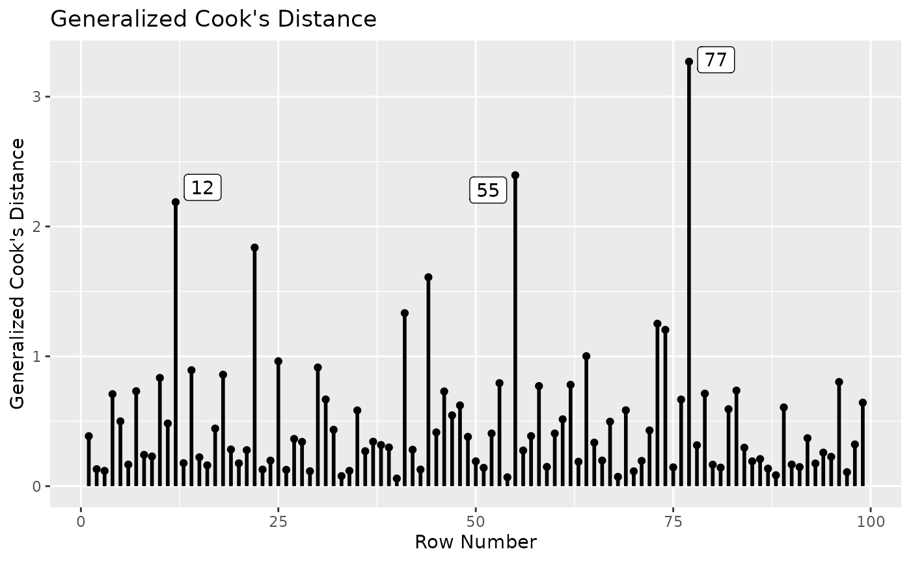
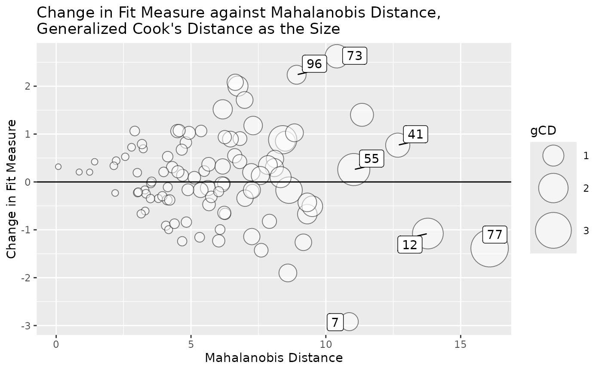

Sensitivity Analysis in Multiple-Group Models
2024-03-20
Source:vignettes/articles/multiple_group.Rmd
multiple_group.RmdGoal
This article illustrates how to identify influential cases in a
multiple-group model using the semfindr
package . This article assumes that readers have learned how to use the
main functions for single-group models (See
vignette("semfindr", package = "semfindr")).
Dataset and Models
The sample dataset cfa_dat_mg in semfindr
will be used in this illustration:
## x1 x2 x3 x4 x5 x6 gp
## 1 -1.2690938 -1.32550591 -0.6285011 -0.7215738 -2.81187575 -0.8436144 GroupA
## 2 -0.0304962 0.05275281 1.1867437 -0.5193213 -1.92131327 -0.1802093 GroupA
## 3 -1.0134542 -0.05071220 -0.7482927 -1.0483134 0.98383479 -0.1672748 GroupA
## 4 0.1647769 -1.75609084 -1.6568902 -0.8036030 -2.14339421 -0.5066695 GroupA
## 5 1.9583190 2.25384865 0.4972562 1.3103522 0.36280304 0.9186370 GroupA
## 6 -1.2487913 -1.48482257 -0.7739649 0.8942307 -0.03870106 0.0403398 GroupA
table(cfa_dat_mg$gp)##
## GroupA GroupB
## 50 50The dataset has six variables, x1 to x6.
The variable gp denotes the group of a case, with values
"GroupA" and "GroupB". Each group has 50 cases
and the total number of cases is 100.
We use assessing measurement invariance as the scenario, based on the tutorial on multiple-group models at the official website of lavaan.
Three confirmatory factor analytic (CFA) models are to be fitted. They are all defined by the following model syntax:
mod <-
"
f1 =~ x1 + x2 + x3
f2 =~ x4 + x5 + x6
"The first model has no between-group constraints. It tests configural invariance.
## This is lavaan 0.6-17
## lavaan is FREE software! Please report any bugs.
fit_config <- cfa(mod, cfa_dat_mg,
group = "gp")The second model tests weak invariance, with factor loadings constrained to be equal across groups:
fit_weak <- cfa(mod, cfa_dat_mg,
group = "gp",
group.equal = "loadings")The third model tests strong invariance, with factor loadings and item intercepts constrained to be equal across groups:
The three models are compared by
lavaan::lavTestLRT():
lavTestLRT(fit_config, fit_weak, fit_strong)##
## Chi-Squared Difference Test
##
## Df AIC BIC Chisq Chisq diff RMSEA Df diff Pr(>Chisq)
## fit_config 16 1878.3 1977.3 30.454
## fit_weak 20 1871.7 1960.3 31.904 1.450 0 4 0.8355
## fit_strong 24 1866.2 1944.3 34.357 2.453 0 4 0.6531
lavTestLRT(fit_config, fit_strong)##
## Chi-Squared Difference Test
##
## Df AIC BIC Chisq Chisq diff RMSEA Df diff Pr(>Chisq)
## fit_config 16 1878.3 1977.3 30.454
## fit_strong 24 1866.2 1944.3 34.357 3.903 0 8 0.8658The tests do not reject both strong invariance and weak invariance.
These are the fit measures of the three models:
fm <- c("chisq", "pvalue", "cfi", "tli", "rmsea")
round(data.frame(configural = fitMeasures(fit_config, fm),
weak = fitMeasures(fit_weak, fm),
strong = fitMeasures(fit_strong, fm)), 3)## configural weak strong
## chisq 30.454 31.904 34.357
## pvalue 0.016 0.044 0.079
## cfi 0.867 0.891 0.905
## tli 0.751 0.836 0.881
## rmsea 0.134 0.109 0.093Although strong invariance is not rejected, the configural invariance and weak invariance model do not have satisfactory fit. Interestingly, the most restrictive model, the strong invariance model, has the best fit. The model chi-square is not significant.
Influential Cases
Despite the fit measures, it is still a good practice to check whether there are any influential cases. Let’s start with the configural invariance model.
Configural Invariance Model
Leave-One-Out by lavaan_rerun()
The leave-one-out approach is used for illustration on the configural
invariance model, fit_config. For this simple model with
only 100 cases, we do not have to use parallel processing. The model is
fitted 100 times, each time with one case removed:
rerun_config <- lavaan_rerun(fit_config)## The expected CPU time is 14.1 second(s).
## Could be faster if run in parallel.Not shown here, but it is possible that a model may fail to converge or have inadmissible solutions if removed. This is especially the case for models with constraints. The function will report cases leading to nonconvergence or inadmissible solutions. Influence measures will not be computed for these cases.
All-In-One: influence_stat()
For preliminary assessment, we can just influence_stat()
to compute all commonly used measures of case influence (Pek & MacCallum, 2011), as well as
Mahalanobis distance (Mahalanobis, 1936),
using the output of lavaan_rerun():
inf_config <- influence_stat(rerun_config)The output can then be used for other functions to examine specific aspects of case influence.
Mahalanobis Distance
Because the model is a CFA model and all observed variables are
endogenous, it is acceptable to examine Mahalanobis distance first (see
print.influence_stat() on options available when printing
the output of influence_stat()).
For multiple-group models, Mahalanobis distance for a case is computed using the mean and covariance matrix of the group this case belongs to.
print(inf_config,
what = "mahalanobis",
first = 5)##
## -- Mahalanobis Distance --
##
## md
## 77 16.349
## 100 16.275
## 12 13.784
## 41 12.666
## 55 11.285
##
## Note:
## - Only the first 5 case(s) is/are displayed. Set 'first' to NULL to display all cases.
## - Cases sorted by Mahalanobis distance in decreasing order.We can visualize the values using md_plot()
md_plot(inf_config,
largest_md = 3)
Cases 77 and 100 are high on Mahalanobis distance. However, the differences from other cases are not substantially large.
Case Influence on Fit Measures
We then examine case influence on fit measures, sorted by model chi-squares:
print(inf_config,
what = "fit_measures",
first = 5,
sort_fit_measures_by = "chisq")##
## -- Case Influence on Fit Measures --
##
## chisq cfi rmsea tli
## 100 5.359 -0.042 0.027 -0.080
## 74 3.193 -0.029 0.015 -0.054
## 7 -2.919 0.020 -0.014 0.038
## 96 2.800 -0.025 0.013 -0.047
## 89 -2.395 0.019 -0.011 0.036
##
## Note:
## - Only the first 5 case(s) is/are displayed. Set 'first' to NULL to display all cases.
## - Cases sorted by chisq in decreasing order on absolute values.Case 100 has a relatively large influence on model chi-square.
Case Influence on Parameter Estimates
Last, we assess casewise influence on parameter estimates by setting
what to "parameters". When printed, by
default, cases will be sorted by generalized Cook’s distance (Cook, 1977):
print(inf_config,
what = "parameters",
first = 5)##
## -- Standardized Case Influence on Parameter Estimates --
##
## f1=~x2 f1=~x3 f2=~x5 f2=~x6 x1~~x1 x2~~x2 x3~~x3 x4~~x4 x5~~x5 x6~~x6
## 100 0.000 0.000 0.000 0.000 0.000 0.000 0.000 0.000 0.000 0.000
## 77 0.000 0.000 0.000 0.000 0.000 0.000 0.000 0.000 0.000 0.000
## 55 0.000 0.000 0.000 0.000 0.000 0.000 0.000 0.000 0.000 0.000
## 12 -0.124 -0.035 -0.365 -0.202 -0.011 0.010 -0.092 -0.231 1.230 0.191
## 22 0.479 0.501 0.005 0.410 0.352 -0.243 -0.247 0.449 -0.032 -0.591
## f1~~f1 f2~~f2 f1~~f2 x1~1 x2~1 x3~1 x4~1 x5~1 x6~1 f1=~x2.g2
## 100 0.000 0.000 0.000 0.000 0.000 0.000 0.000 0.000 0.000 -0.742
## 77 0.000 0.000 0.000 0.000 0.000 0.000 0.000 0.000 0.000 0.365
## 55 0.000 0.000 0.000 0.000 0.000 0.000 0.000 0.000 0.000 0.618
## 12 0.073 0.150 0.063 0.188 0.042 0.098 -0.074 0.443 -0.116 0.000
## 22 -0.225 -0.148 -0.729 0.152 0.252 0.241 -0.280 -0.022 -0.098 0.000
## f1=~x3.g2 f2=~x5.g2 f2=~x6.g2 x1~~x1.g2 x2~~x2.g2 x3~~x3.g2 x4~~x4.g2
## 100 0.432 -0.566 0.487 -0.231 0.706 0.526 -0.202
## 77 -0.432 0.061 0.248 -0.090 0.863 0.085 0.074
## 55 0.762 0.233 0.293 1.315 -0.028 -0.162 0.158
## 12 0.000 0.000 0.000 0.000 0.000 0.000 0.000
## 22 0.000 0.000 0.000 0.000 0.000 0.000 0.000
## x5~~x5.g2 x6~~x6.g2 f1~~f1.g2 f2~~f2.g2 f1~~f2.g2 x1~1.g2 x2~1.g2 x3~1.g2
## 100 0.450 0.606 0.367 0.258 0.511 0.242 -0.053 0.527
## 77 -0.070 -0.047 0.532 -0.134 0.151 0.340 0.563 0.073
## 55 -0.083 -0.192 -0.781 -0.081 -0.345 0.198 -0.164 -0.159
## 12 0.000 0.000 0.000 0.000 0.000 0.000 0.000 0.000
## 22 0.000 0.000 0.000 0.000 0.000 0.000 0.000 0.000
## x4~1.g2 x5~1.g2 x6~1.g2 gcd
## 100 0.196 -0.019 0.474 4.198
## 77 0.053 0.050 0.188 2.742
## 55 -0.176 -0.196 -0.134 2.351
## 12 0.000 0.000 0.000 2.188
## 22 0.000 0.000 0.000 1.838
##
## Note:
## - Changes are standardized raw changes if a case is included.
## - Only the first 5 case(s) is/are displayed. Set 'first' to NULL to display all cases.
## - Cases sorted by generalized Cook's distance.We can also visualize the generalized Cook’s distance using
gcd_plot():
gcd_plot(inf_config,
largest_gcd = 3)The generalized Cook’s distance suggests that Case 100 has a strong
influence on parameter estimates. It only affects parameter estimates in
GroupB because it is in GroupB and the model
has no between-group equality constraints.
We can visualize all three aspects in one plot using
gcd_gof_md_plot():
gcd_gof_md_plot(inf_config,
fit_measure = "chisq",
circle_size = 15,
largest_gcd = 3,
largest_md = 3,
largest_fit_measure = 3)
Case 100 stands out from others when all three aspects are considered together.
To assess case influence only on factor loadings in
GroupB in this model, we can use est_change().
"=~.GroupB" denotes all factor loadings in
GroupB (see pars_id() on how to select
parameters):
est_change_group <- est_change(rerun_config,
parameters = c("=~.GroupB"))
print(est_change_group,
first = 5)##
## -- Standardized Case Influence on Parameter Estimates --
##
## f1=~x2.g2 f1=~x3.g2 f2=~x5.g2 f2=~x6.g2 gcd
## 100 -0.742 0.432 -0.566 0.487 2.074
## 55 0.618 0.762 0.233 0.293 0.828
## 77 0.365 -0.432 0.061 0.248 0.592
## 61 0.023 -0.263 0.099 -0.495 0.415
## 73 -0.412 -0.046 -0.441 -0.288 0.403
##
## Note:
## - Changes are standardized raw changes if a case is included.
## - Only the first 5 case(s) is/are displayed. Set 'first' to NULL to display all cases.
## - Cases sorted by generalized Cook's distance.The value of generalized Cook’s distance is smaller for Case 100
because only the influence on factor loadings is computed. However, the
difference from those values of other cases is much larger. This can be
visualized using gcd_plot():
gcd_plot(est_change_group)
Is Mahalanobis Distance Enough?
Note that the example above illustrates that a case that is extreme is not necessarily a case that is influential. Case 100 is influential but it is not the case with the highest Mahalanobis distance. Admittedly, Mahalanobis distance does reflect the potential to be influential. However, in some models, such as models with regression paths (e.g., a path model), an influential case may not be an extreme case. Therefore, it is not enough to examine only Mahalanobis distance.
Fit the Models Again Without The Potential Influential Case
Let us fit the three models again, without Case 100.
cfa_dat_mg_no100 <- cfa_dat_mg[-100, ]
fit_config_no100 <- cfa(mod, cfa_dat_mg_no100,
group = "gp")
fit_weak_no100 <- cfa(mod, cfa_dat_mg_no100,
group = "gp",
group.equal = "loadings")
fit_strong_no100 <- cfa(mod, cfa_dat_mg_no100,
group = "gp",
group.equal = c("loadings", "intercepts"))
lavTestLRT(fit_config_no100, fit_weak_no100, fit_strong_no100)##
## Chi-Squared Difference Test
##
## Df AIC BIC Chisq Chisq diff RMSEA Df diff Pr(>Chisq)
## fit_config_no100 16 1840.5 1939.1 25.095
## fit_weak_no100 20 1834.0 1922.3 26.657 1.5616 0 4 0.8157
## fit_strong_no100 24 1828.4 1906.3 29.031 2.3739 0 4 0.6673
lavTestLRT(fit_config_no100, fit_strong_no100)##
## Chi-Squared Difference Test
##
## Df AIC BIC Chisq Chisq diff RMSEA Df diff Pr(>Chisq)
## fit_config_no100 16 1840.5 1939.1 25.095
## fit_strong_no100 24 1828.4 1906.3 29.031 3.9355 0 8 0.8629Strong invariance is still not rejected if Case 100 is removed.
fm <- c("chisq", "pvalue", "cfi", "tli", "rmsea")
round(data.frame(configural = fitMeasures(fit_config_no100, fm),
weak = fitMeasures(fit_weak_no100, fm),
strong = fitMeasures(fit_strong_no100, fm)), 3)## configural weak strong
## chisq 25.095 26.657 29.031
## pvalue 0.068 0.145 0.219
## cfi 0.910 0.934 0.950
## tli 0.831 0.901 0.938
## rmsea 0.107 0.082 0.065If Case 100 is removed, all three models fit satisfactorily, with model chi-squares not significant.
We can check case influence again:
rerun_config_no100 <- lavaan_rerun(fit_config_no100)## The expected CPU time is 8.41 second(s).
## Could be faster if run in parallel.
inf_config_no100 <- influence_stat(rerun_config_no100)For brevity, we only examine the plots:
md_plot(inf_config_no100,
largest_md = 3)
gcd_plot(inf_config_no100,
largest_gcd = 3)
gcd_gof_md_plot(inf_config_no100,
fit_measure = "chisq",
circle_size = 15,
largest_gcd = 3,
largest_md = 3,
largest_fit_measure = 3)
Although there are still cases with large generalized Cook’s distance, there are no cases stand out from others, compared to the analysis with Case 100.
Final Remarks
Note that the sample dataset above was artificially created. Case 100 was inserted to illustrate the workflow and how to use the functions. In real datasets, it is usually not that simple in sensitivity analysis due to the complexity and noise in real data.
Nevertheless, it is still possible to have cases easily identifiable. For example, a case may be influential due to computation error or reporting error.
Moreover, in real datasets, when one or more influential cases are identified, examination of other information is necessary before deciding what to do with them. We cannot do this in the example above because the dataset is artificial. In real datasets, please see Aguinis et al. (2013).